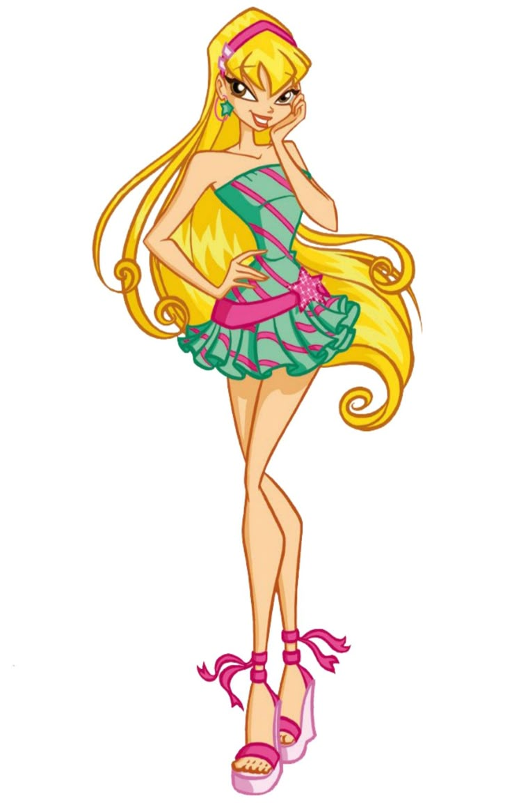
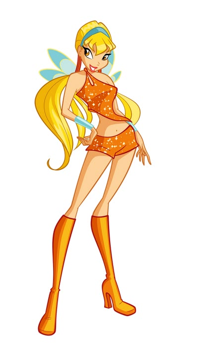
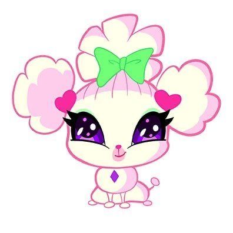

|
 |
 |
Stella é uma das protagonistas de O Clube das Winx e a Fada do Sol e da Lua. Ela é conhecida por sua personalidade alegre, vaidosa, divertida e confiante. Seus poderes estão relacionados à luz do Sol e da Lua, permitindo que ela utilize energia luminosa em diferentes situações mágicas.
Stella nasceu no planeta Solaria e é filha do rei Radius e da rainha Luna. Ela é uma princesa e possui uma ligação especial com a luz dos astros, que representa a principal fonte de seus poderes mágicos.
Antes de conhecer Bloom, Stella já estudava na Escola de Fadas de Alfea. Durante uma de suas aventuras, ela foi atacada por um ogro e acabou sendo ajudada por Bloom, que descobriu seus próprios poderes ao tentar protegê-la.
Stella levou Bloom para Alfea, onde a jovem começou a aprender sobre magia. Foi assim que Bloom conheceu outras fadas e, junto com Stella, Flora, Musa e Tecna, formou o grupo que ficaria conhecido como Clube das Winx.
Ao longo de suas aventuras, Stella enfrenta desafios relacionados à sua família, à sua vida como princesa e ao desenvolvimento de seus poderes. Apesar de sua vaidade e de seu jeito brincalhão, ela demonstra coragem e lealdade quando seus amigos precisam de ajuda.
Na sua primeira transformação, conhecida como Magic Winx, Stella manifesta os poderes do Sol e da Lua, utilizando energia luminosa para criar feitiços e ataques mágicos.
Seus poderes estão associados à luz, ao brilho e à energia dos astros. Stella consegue lançar rajadas luminosas, criar efeitos de claridade e utilizar sua magia para enfrentar adversários.
• Controle da luz: Stella pode manipular energia luminosa para realizar diferentes feitiços.
• Magia solar: utiliza a energia do Sol para criar ataques mágicos e rajadas de luz.
• Magia lunar: seus poderes também estão relacionados à Lua e à luz lunar.
• Rajadas de energia: consegue disparar feitiços luminosos contra seus adversários.
• Escudos mágicos: pode utilizar sua energia para se proteger de ataques.
• Voo mágico: como fada, Stella pode voar utilizando suas asas mágicas.
Na transformação inicial, Stella apresenta cabelos longos e loiros, asas delicadas em tons de amarelo e laranja e uma roupa característica composta por um top colorido, saia curta e botas. Seu visual combina com sua personalidade vibrante e com seus poderes relacionados à luz.
Essa forma representa o início de sua jornada ao lado das outras Winx e seu desenvolvimento como fada.

Ginger é a cachorrinha de estimação de Stella. Ela é uma pequena cadela que acompanha a fada em momentos de sua vida e faz parte de suas aventuras.
Ginger é um animal de estimação querido por Stella e aparece em histórias relacionadas às Winx e seus companheiros animais.
Ginger é o animal de estimação de Stella e não deve ser confundida com os Fairy Animals, os animais mágicos associados às Winx em aventuras posteriores.
• Stella é a princesa de Solaria.
• Seus pais são o rei Radius e a rainha Luna.
• Seus poderes estão relacionados ao Sol e à Lua.
• É conhecida por ser vaidosa, alegre e divertida.
• Foi uma das primeiras amigas de Bloom no mundo mágico.
• Seu animal de estimação é a cachorrinha Ginger.
• É uma das integrantes fundadoras do Clube das Winx.